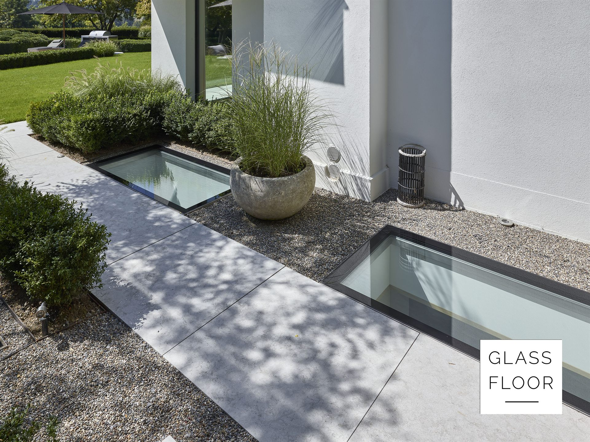
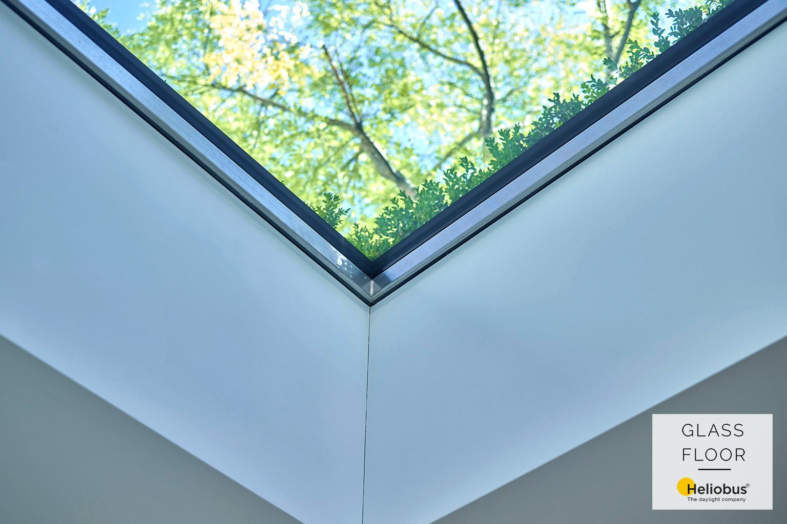

GLASSFLOOR® · St. Gallen · Switzerland
Švýcarská preciznost.
Švýcarská preciznost.
Světlo bez kompromisů.
Pochozí světlíky vyráběné pro architekturu, ve které záleží na každém milimetru.
Pochozí světlíky vyráběné pro architekturu, ve které záleží na každém milimetru.




Prototyp — přesné hodnoty budou doplněny z technických podkladů výrobce.

Pošlete nám fotografii místa nebo půdorys. Navrhneme pochozí světlík, který z něj udělá hlavní scénu domu.
Domluvit konzultaci